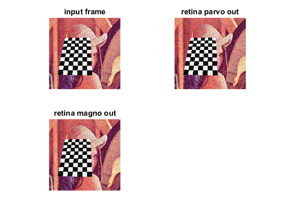
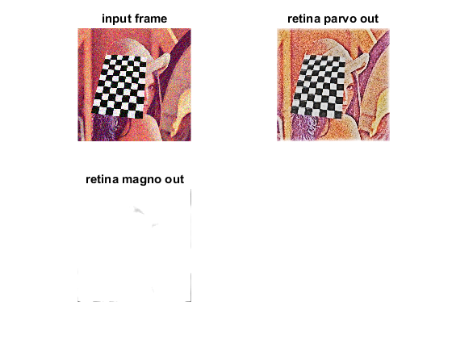

Retina demonstration
Demonstrates the use of wrapper class of the Gipsa/Listic Labs retina model.
This retina model allows spatio-temporal image processing (applied on a webcam sequences).
As a summary, these are the retina model properties:
- It applies a spectral whithening (mid-frequency details enhancement)
- high frequency spatio-temporal noise reduction
- low frequency luminance to be reduced (luminance range compression)
- local logarithmic luminance compression allows details to be enhanced in low light conditions
NOTE : this program generates the default retina parameters file RetinaDefaultParameters.xml. You can use this to fine tune parameters and load them if you save to file RetinaSpecificParameters.xml
Sources:
Contents
Webcam
setup webcam reader and grab a first frame to get its size
cap = createVideoCapture([], 'chess'); pause(1) assert(cap.isOpened(), 'Camera failed to initialize'); img = cap.read(); assert(~isempty(img), 'Failed to capture frames'); sz = size(img);
Instantiate
allocate a retina instance with input size equal to the one of the loaded image
if true % "classical" retina retina = cv.Retina([sz(2) sz(1)]); else % log sampling (favour foveal vision and subsamples peripheral vision) retina = cv.Retina([sz(2) sz(1)], 'UseRetinaLogSampling',true, ... 'ReductionFactor',2, 'SamplingStrength',10); end
retina parameters
save current (here default) retina parameters to a xml file (you may use it only one time to get the file and modify it)
%retina.write('retinaParams.xml');load retina parameters from a xml file : here we load the default parameters that we just wrote to file
%retina.setup('retinaParams.xml');Prepare
reset all retina buffers (open your eyes)
retina.clearBuffers();
prepare figure
figure subplot(223); hImg(3) = imshow(img); title('retina magno out') subplot(222); hImg(2) = imshow(img); title('retina parvo out') subplot(221); hImg(1) = imshow(img); title('input frame') colormap gray
Run
main processing loop
while all(ishghandle(hImg)) % grab a new frame and display it img = cap.read(); if isempty(img), break; end % run retina on the input image retina.run(img); % grab retina outputs parvo = retina.getParvo(); magno = retina.getMagno(); % draw retina outputs set(hImg(1), 'CData',img) set(hImg(2), 'CData',parvo) set(hImg(3), 'CData',magno) drawnow end cap.release();